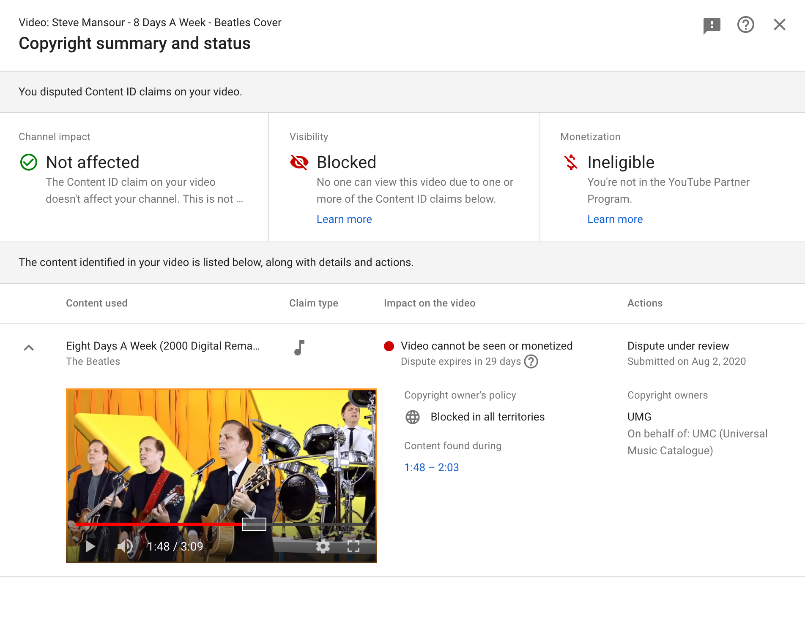

| HOME | MUSICIAN | SONG WRITER | PRODUCER |
| ★ JOIN EMAIL LIST ★ | ALBUMS | CHRISTMAS SONGS | VIDEOS | COLLABORATIONS | DOWNLOAD |
|
Behind The Scenes #5 * * * UPDATE * * * September 4, 2020 - I am happy to report the very unexpected outcome of my dispute: United Music Group dropped their copyright claim against my video. So, I have now made this video available on YouTube. I didn't think this would be how it turned out, but I am very happy with the outcome! Original post, Aug 9, 2020 On August 2, 2020, I uploaded my video for Eight Days A Week to YouTube. Once uploaded, YouTube puts videos through a "processing" phase. It scans them to see if they use any copyrighted audio or video clips. If it finds something, the video may be blocked and no one will be able to see it. Technically, creating a cover version of someone else's song and putting it up on YouTube is a copyright violation. Fortunately, YouTube is not looking for this (yet). But, again, if they detect the use of any copyrighted audio (for example, a record or cd audio track) there's a good chance it will be blocked. When the processing for my Eight Days A Week video finished, it was immediately blocked. I got flagged with a copyright infringement. The "processing" claimed that certain areas of my audio track were taken from the Beatles 2000 Digital Remaster of Eight Days A Week. At first, I thought this was a practial joke. But it was not. The video is currently blocked on YouTube. I did set out to faithfully recreate the Beatles' arrangement, but this is crazy. Just for the record, I would never use anyone else's recording and claim it was mine. I recorded all the voices and instruments myself in my home studio. The "processing" detection algorithms just got it wrong. If you listen to my version, you will hear that it is not the Beatles recording, not their voices, not their instruments, not their handclaps. My options were to let them remove the audio from the areas in question, or dispute the claim. I chose to dispute. I even offered to let them review the individual tracks that I created in Pro Tools. The copyright owner has 30 days to review the dispute and decide whether or not they want to drop the claim. The copyright owner is UMG (Universal Music Group, in Santa Monica, CA). If they listen to it I'm sure they'll hear that I didn't use the Beatles' recording. I'm concerned that they may do nothing at all, which means this video will be blocked forever on YouTube. There are alternatives to YouTube. Vimeo is a great alternative site. That's where I chose to put this video. So, at least the people on my email list (and anyone you decide to forward this message to) can see it. The dispute is still being reviewed at the time of this writing. If UMG agrees to drop the copyright claim then the video will be available on YouTube and I will send out a quick note. But I fear the most likely outcome is that it will only be available on Vimeo. This is one of those times when I really hope I'm wrong.  |